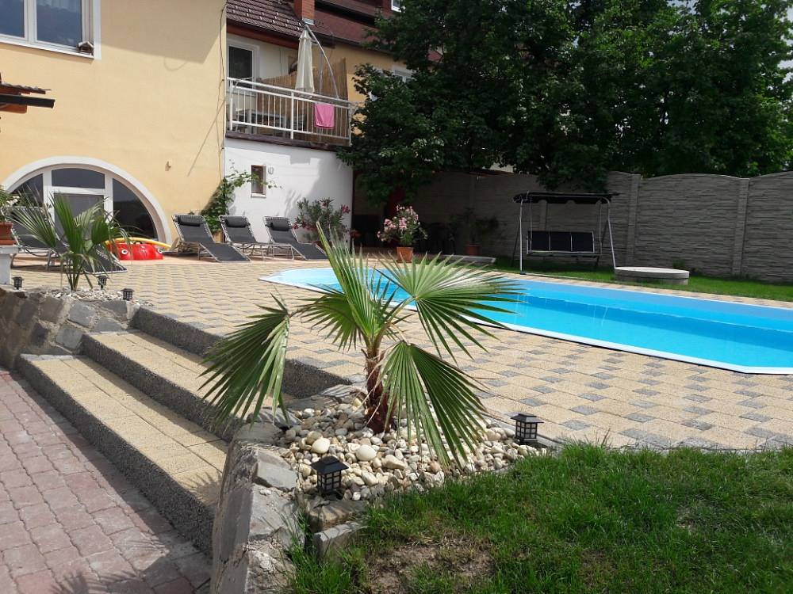
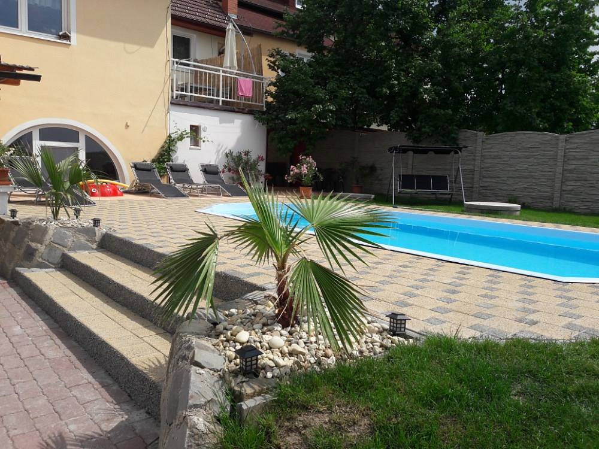

Milujete přírodu, cyklistiku, lenošení u vody a posezení u sklenky vína? Neváhejte a poznejte krásy Jižní Moravy!
Nabízíme pronájem apartmánu ve vinařské obci Pouzdřany, která se nachází nedaleko městečka Mikulov, Pálavy, Lednicko - valtického areálu a Novomlýnských nádrží na jihu Moravy. Obcí prochází cyklostezka vedoucí krásnou přírodou kolem nádrží Nové Mlýny.
Apartmán Pouzdřany leží kousek od vinných sklípků, kde se víno dělá s láskou a radostí. V blízkosti apartmánu je možné navštívit restauraci, vinárnu, fotbalové hřiště, dětské hřiště s průlezkami a altánkem, víceúčelové sportovní hřiště, rybník, Pouzdřanskou step, vinařství Kolby a rodinné sklepy.
Pronájem apartmánu pro 20 osob v 5 ložnicích.
Kompletně vybavený apartmán je možné pronajmout až pro 20 osob. Apartmán má svůj vlastní vchod a parkování před domem.
Ze vstupní haly v přízemí se vchází do obývacího pokoje, ve kterém jsou k dispozici dvě sedací soupravy s konferenčním stolkem, jídelní stůl se šesti židlemi, TV - plazma s úhlopříčkou 105 cm, s příjmem satelitu TELLY, Hi - Fi věž, DVD/VHS přehrávač, vinotéka pro uskladnění vína. Pokoj je propojen s kuchyní a jídelnou – plně vybavená kuchyňská linka s nádobím, lednice s mrazicím boxem, myčka, plynový sporák s elektrickou troubou, odsavač, mikrovlnná trouba, varná konvice, domácí pekárna, domácí výčepní zařízení na 5l soudky, velký kuchyňský stůl a šest barových židlí. Z kuchyně je přístup na venkovní terasu se zahradním nábytkem.
Z haly se vstupuje též do podkroví a do suterénu. V podkroví se nachází tři ložnice, které jsou neprůchozí. Každá ze dvou menších ložnic obsahuje dvě manželské postele, skříně a TV, třetí ložnice má tři manželské postele, skříně a TV. V suterénu se nachází čtvrtá ložnice s manželskou postelí, druhý obývací pokoj s TV, kuchyňským koutem a krbem, kde jsou k dispozici další čtyři lůžka. Odtud se pak prochází na zahradu s venkovním bazénem o velikosti 3,5 x 7,5 m, kde je možné využívat ohniště, gril, posezení, pískoviště, domeček pro děti, hračky na písek, kočárek s panenkou, stolní tenis, stolní fotbal, trampolínu a skluzavku. Zahrada sousedí s výběhem pro naše hodné ovečky.
V přízemí se nachází koupelna s rohovou vanou, umyvadlem a pračkou a samostatné WC, v podkroví sprchový kout, umyvadlo a WC a v suterénu dvě WC a koupelna se sprchovým koutem.
Pro děti jsou v apartmánu k dispozici knížky, hračky, společenské hry a počítač.


 


Apartmán se nachází ve vinařské obci Pouzdřany, kde můžete navštívit menší rodinné sklípky a nedaleká vinařství. Vinařství Gotberg(3km) Vinařství Sonberk(3km) Vinařství Kolby(1km)

V blízkosti apartmánu se nachází Aqualand Moravia, WAKE Merkur(autem 10km, na kole 5km),Moravská vinná stezka procházející obcí Pouzdřany, víceúčelové hřiště(1km), fotbalové hřiště(400m), dětské hřiště s průlezkami a altánkem(400m), nádrž Nové Mlýny(3km), řeka Svratka(1km), Welness v hotelu Iris v Pavlově(9km), Welness Mikulov(17km), Lázně Lednice(20km), Termální lázně Therme Laa(50km), koupaliště v Mikulově a v Hustopečích(15km), přírodní koupání na Mušovských jezerech(5km)
Doporučujeme navštívit Lednicko-valtický areál, jemuž vévodí zámek v Lednici s rozsáhlou zahradou a Minaretem a zámek ve Valticích(27km). Celý komplex obsahuje několik menších objektů: romantickou zřícenu Janův hrad(20km), klasicistní myslivnu Lovecký zámeček(20km), Apollónův chrám(22km), Randez-vous(28km), Tři Grácie(26km) a Obelisk(23km). Nedaleko apartmánu je k vidění Národní přírodní rezervace Pouzdřanská step a lesostepní doubrava Kolby(2km), Chráněná krajinná oblast Pálava(5km) a Ptačí oblast na Střední nádrži Vodního díla Nové Mlýny(1,5km).